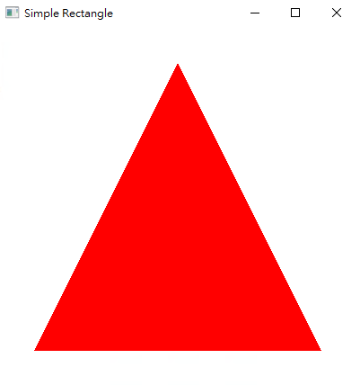

如何在 OpenGL 中畫三角形？
在 OpenGL 的世界中，任何 2D、3D 的圖形都是由頂點跟頂點之間的連線組成，例如：三角形是由三個頂點及三個頂點間的連線構成。
流程
清除畫面內容
1
2glClearColor(1.0, 1.0, 1.0, 1.0);
glClear(GL_COLOR_BUFFER_BIT);設定攝影機位置、拍攝角度
1
2
3glMatrixMode(GL_MODELVIEW);
glLoadIdentity();
gluLookAt(0, 0, 1.0f, 0, 0, 0, 0, 1, 0);設定三角形頂點位置(-8, -8, 0)、(-8, -8, 0)、(0, 8, 0)、頂點顏色 (紅色)
1
2
3
4
5glBegin(GL_TRIANGLES);
glColor3f(1, 0, 0); glVertex3f(-8, -8, 0);
glColor3f(1, 0, 0); glVertex3f(-8, -8, 0);
glColor3f(1, 0, 0); glVertex3f(0, 8, 0);
glEnd();
執行結果

完整程式碼請到Github